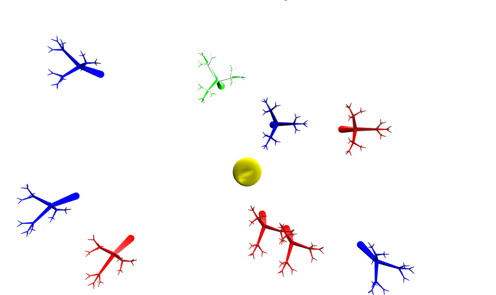

Rachel Haub
rhaub@ucsc.edu
Lab 4
When Camera mode is turned off:
Right Click: Renders a red tree with a glossiness of 5 to the screen.
Left Click: Renders a blue tree with a glossiness of 20 to the screen.
Shift click: If performed on an existing tree, turns the tree green with a glossiness of 0. If performed on "empty space", the selected tree is deselected. If performed on the light (yellow sphere), the light is toggled between on and off.
Shift Right-Click Drag: Horizontal drag rotates the selected tree about the X axis. Vertical Drag rotates the selected tree about the Z axis.
Scroll wheel: Scrolling up increases tree scale, scrolling down decreases tree scale.
Left click drag: Moves currently selected tree. If no tree is selected, moves the light.
User can toggle between flat shading, smooth shading, and wireframe render modes. User can also choose perspective or orthographic projection, as well as top or side view
When the orb is yellow, the point light is on. When the orb is turqoise, the point light is off.
When Camera mode is turned on:
Left click drag: Pans the camera up, down, left, and right with respect to the camera.
Mouse wheel: Zooms in and out by changing the fov.
Mouse wheel + shift: Moves the camera in and out.
